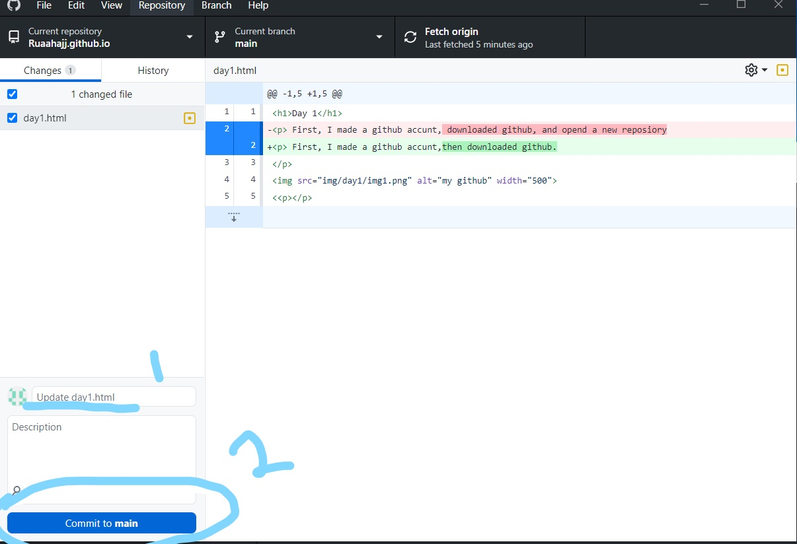
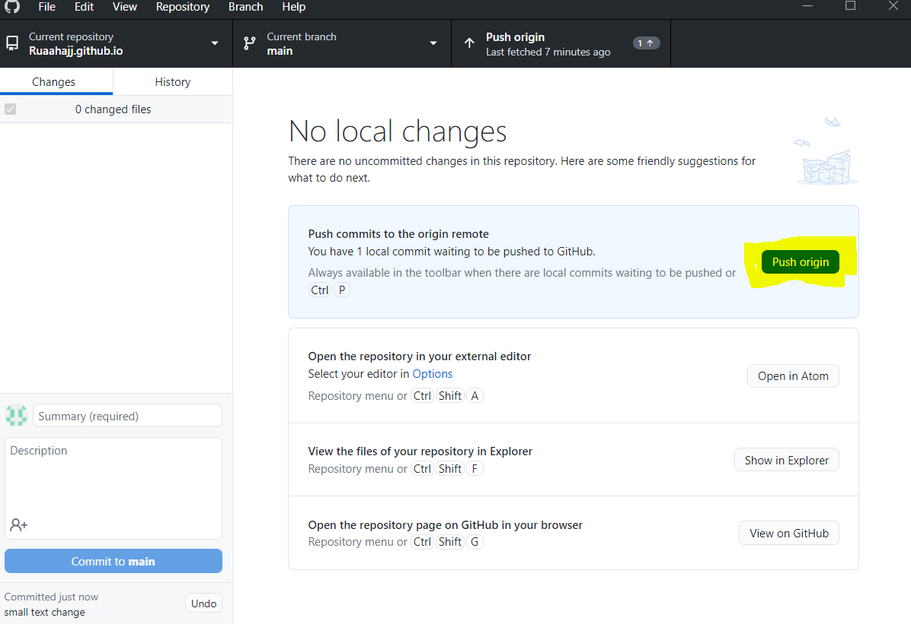
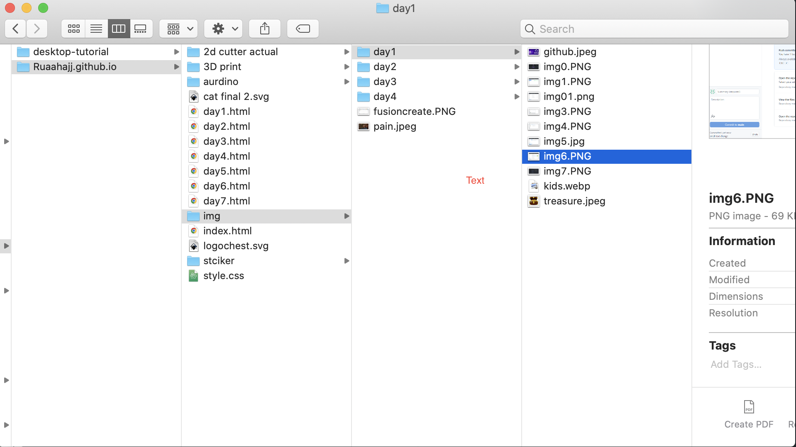

DAY 1
Today's learning objectives:
1-Using github to store your work
2-A step by step (with pictures) to create a website for the absolute beginner + some helpful resources
3-Mistakes I made so you dont have to
First, I made a github accunt,then downloaded github.

Then, I made a repository with the name "Ruaahajj.github.io"
".
Making a repositry can be done by going to file-->
new repository
Or simply by pressing CTRL + N

Now, this begs the question: what IS a repository?
In simple terms, it's storage for your code.
Kind of like a cloud for your code.
Now let's go over some basic commands using github,
we will be using them in order.
1- Clone: to copy your repositry. Why is this necessary? It creates something
of a "branch" of your main repositry on whatever device your using, so everytime
you make a change on one device, that gets copied on all you devices.
Which brings us on to our next command.
2- Pull: This command is used to receive changes made in other devices.
Think of your repositry as a notebook. Cloning the repository is like putting
the same exact copy of the notebook in a different part of your house.
You write on one of said notebooks. The "PULL" command is the equivalent of having
the same content you wrote on one notebook magically appear on aLL your notebooks.
3- Commit and push: You're going to be using those alot.
This basically means to store your code or "push" it into your repository.
This is best demonstated. So 1 is where you add your comment or what you changed
in your code. If your chnages are very small you might not need a comment
and your "commit to main" button (2) will be blue. If it's blue you can
move on to step 3, which is pushing orgin (highlighted).
 
Next, we have to create an html file to add to our repository.
To do this, open the notes app, go to file-->
save as-->
and save it with the HTML extention
(very important!! highlighted below).

Now that we have our html file, we can start coding!
HTML is one of the simpler programming languages,
and there are many tutorials on youtube. You can start by typing anything you want.
Congratulations! You just created a website!
Dont forget to save your work!
Now, to save our progess, we must commit and push (save to repository). You can open your website by simply opening the document.
Your website may not look like what you imagined, but that's okay.
You can link a css stylesheet like I did to "Style" your website later.
I may post tutorial on how to integrate css and javascrip in the near future.
But right now let's keep our focus on the bascis.
It's a learning curve (trust me :')) here are some materials to help you get started.
Atom
Explore HTML tags
youtube
Tips:
You can right click and inspect my code to see how I've built my website
MISTAKE 1: this might sound obvious after I state it,
but you can't use the img tag unless the img is in your file. Meaning in
your repository. That means you cant save an image on your computer
in a random location/photos like youre probably used to. It needs to be in
your cloned repository folder. The same goes for any extra html documents
you want to link, and videos.
2-IMAGES NOT APPEARING PROBLEM: EVERYONE has had this problem
you are lying if you say you arent. usually there are two things you should check.
First is that you've called the img correctly, naming ALL the subfolders in it correctly.
For example:

The way to call is image is "img/day1/img6.PNG" Now that last part ".PNG"
is the second most common mistake. If your images arent uploading
then you probably forgot to add the file type, or you put the wrong
type (not all images are PNG images). You can check the file type by
viewing the image "information" (also shown in the picture, this is on MACOS,
to view image info on windows right click on the image)